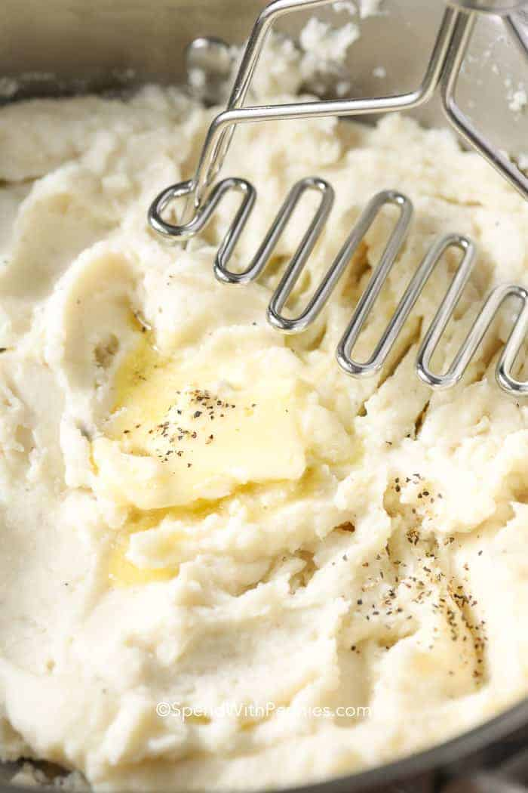

Mashed Potatoes

Description
Come here for a traditional Thanks Giving meal which will make everyone around the table delightful !
Ingredients
- Butter
- Cream/Milk
- Seasonings
- Potatoes (of course !)
- Milk
- More butter
Steps
- Peel the Potatoes: Peel the potatoes (per the recipe below).
- Cut into quarters and place into cold salted water in a large pot (cold water helps to ensure they cook evenly).
- Boil the Potatoes: Cook potatoes in boiling water until tender. The length of time you need to boil the potatoes depends on how big they are cut. I cut my potatoes into quarters and boil them for about 15 minutes. To check if your potatoes are ready, use a fork to poke the potato and see if it is tender!
- Mash the Potatoes: Once well-drained, mash with the potatoes with a hand masher and with melted butter, warmed milk, and salt & pepper per the recipe below.
- Spread them into a greased casserole pan, dot with butter if desired and cover. Bake at 325°F until the butter melts and the potatoes are heated through, about 35-40 minutes. If you’d like a browned crust, bake uncovered.
Go back to the main page